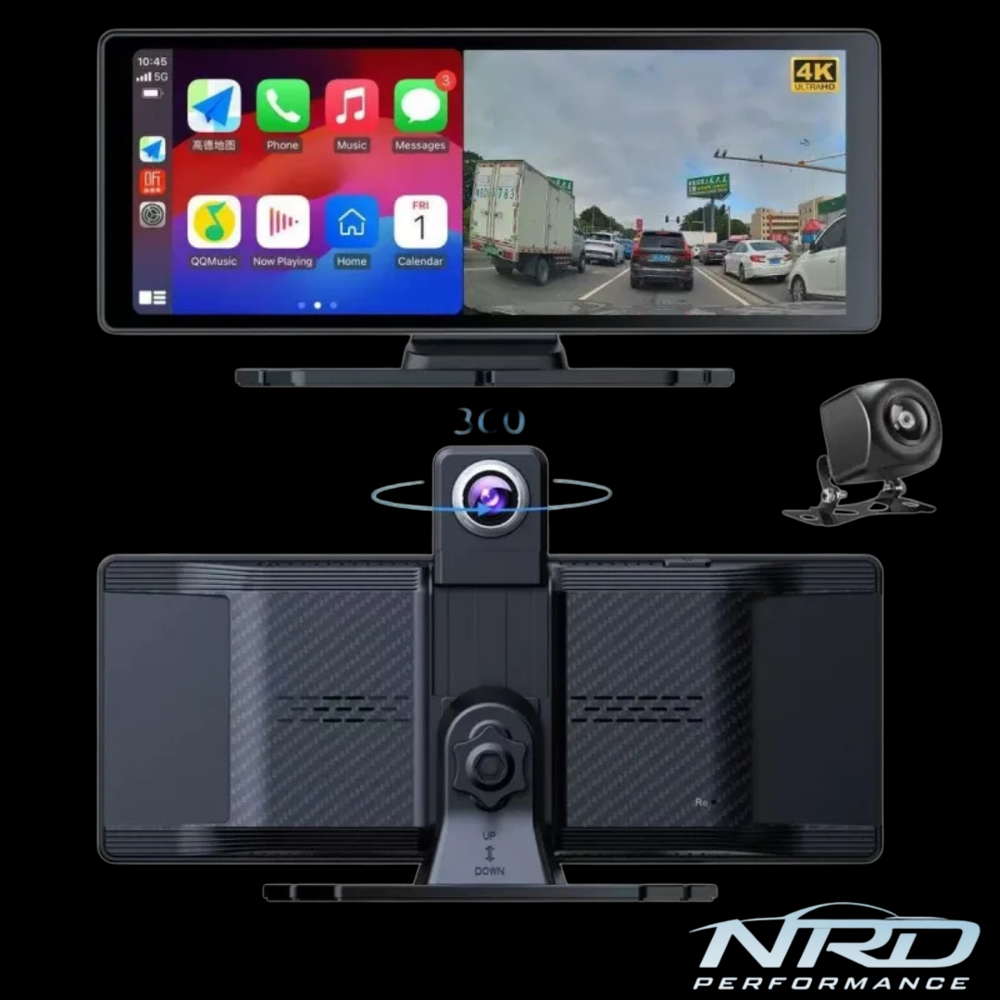

A premium smart dash cam system built for performance-focused drivers. Seamlessly combining recording, connectivity, and control.
Designed for universal compatibility. Mount the display, connect via USB or AUX, attach the rear camera, and you’re ready to drive. No complex wiring required.